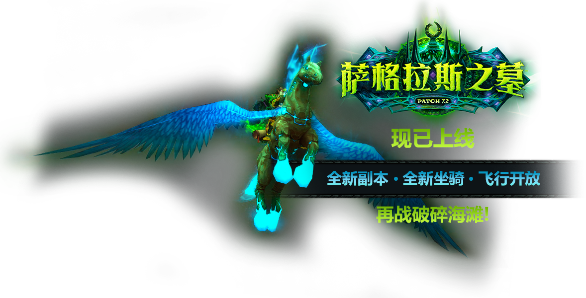
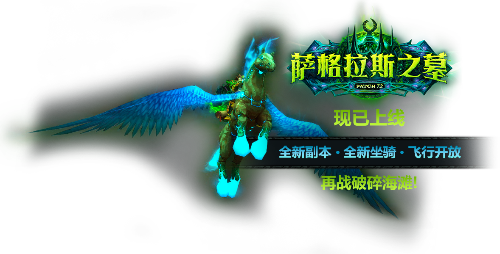
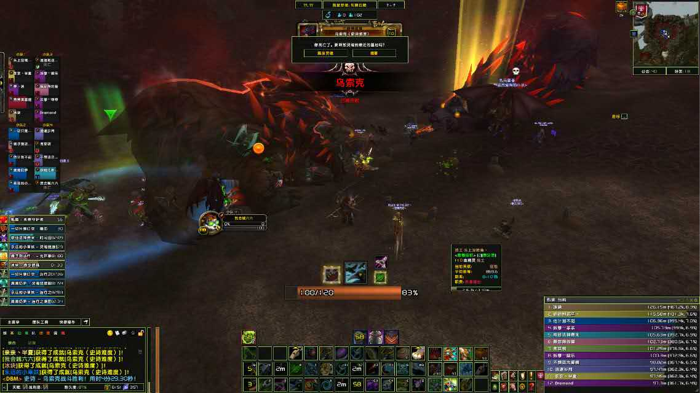
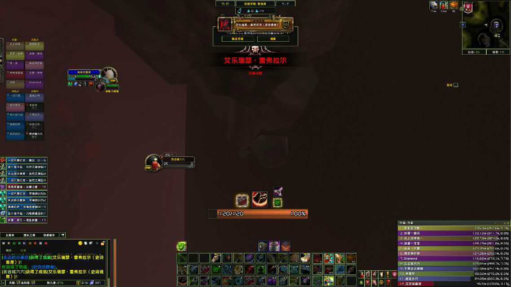

三区---燃烧之刃---部落《Maybe公会》
终于辛辛苦苦的经历几个CD的奋斗，无所次的倒下无数次的爬起来，无数次的看到希望，又无数次的破灭，最终顺利的灭掉了它。
--尼珊德拉
经历了漫长的等待终于又重新开始了征服阴影的世界，同样的倒下与爬起来的挣扎。
--乌索克

各种打法，各种研究，各种变阵，2小时解决战斗的吧。
--梦靥之龙
这个很简单的，由于有人会打，打了几把就打掉了。
--艾乐瑞瑟·雷弗拉尔

记不清打了多久，灭了多少次，多少次的倒下与爬起了。
--伊格诺斯·腐蚀之心

开荒了2晚上，由于各种请假，找了一个野人，最终还是过去了。
--塞纳留斯
这个传说中翡翠最简单的BOSS，我们打了一晚上，终于踩在脚下拿到千钧一发成就。
--萨维斯